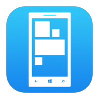

Installation Steps for Android: |
- Tap the Apps icon on the home screen.
- Swipe left and right until you find the Play Store icon. Tap it.
- Tap the magnifying glass in the top-right, type in the name of the app you’re looking for, and tap the magnifying glass in the bottom right. Some suggestions will pop up below the search box as you type, which you can tap to reach directly. The search term
can also be more general to find any apps that focus on a topic or keyword
- Results will be presented for apps, movies, and books. To the right of the Apps subheading, tap the “more” button to see the full listing of results.
- Tapping the three dots on the right side of each entry will provide options to install right away or add the app to a wishlist for future reference.
- Tapping the box itself will provide more details for that app, including screenshots, video, a description, and reviews from users like you. Tap the Install button at the top to start downloading. You will be prompted to provide certain device permissions for the installation to continue.
- Ongoing downloads and installations will show as icons in the notification bar at the top of the screen. Swipe down from the top for a detailed look.
- Once the download and installation are complete, you can tap the Open button in the Play Store listing, or tap the icon from the notification tray to open your app. Otherwise, the app will be accessible by tapping the Apps icon in the bottom of your home screen, assuming an icon hasn’t already been put on your home screen.
|
Installation Steps for iOS |
- Tap the "App Store" button. It should open up the top menu (if you haven't updated or searched the store itself yet).
- Realize that, no matter whether the app is free, or the app is a paid app, your account must have a credit card associated to the account, to "purchase" an app via the store itself from your device itself.
- Tap the "Search" button from the bottom portion of the screen. Most of your searches will start in this area of the AppStore.
- Tap the selection you want.
- Find your suggested app, and look at its price. Some apps are free.
- Tap the selected app.
- Read through the app's description. it may vary well tell you whether this app is a good app for you or not, or that other fees may incur(such as subscription to the website version of the app may result).
- Scroll back to the top of the page. You may tap the very top bar(where the battery power and clock exist along with iPhone network) to advance your page back to the top of the page, very quickly.
- Tap the price button(or, in most instances, "FREE" button) and type your Apple ID's password.
-
Wait for the app to "Load" and "Install"
|
Installation Steps for Windows Phone |

- From Start, press Marketplace Marketplace Tile. If prompted, sign in with a Windows Live ID.
- Press Applications or Games.
- Flick left or right to see top, new or featured items, or browse categories. When you find an application or game you want, press it.
- If an application or game is free, press Install (you might be prompted twice) to download it.
- Otherwise:
- Press Buy to pay for the application (you'll be prompted twice).
- Press Try to download a free trial version (if available).
- Tap the selected app.
- It might take several minutes for an application to finish downloading. Look for new applications in the Application list (from Start, flick left). New games show up in the Games Hub (from Start, press Games).
|
Installation Steps for Blackberry |
- To download an app from BlackBerry World onto your handset, you need to have BlackBerry App World installed on your handset.
- If you don’t, first visit BlackBerry’s dedicated web page to install the software. Alternatively, you can install the software on your PC but you’ll then need to connect your device to your machine via a USB cable to download apps.
- Flick left or right to see top, new or featured items, or browse categories. When you find an application or game you want, press it.
- Open the BlackBerry App World and browse the store for an application you want to download. When you find one, click on the app name to view more details about the software.
- Scroll down to Download and press this option. The app will now be installed on your handset, ready for you to start using it.
- It’s worth noting that as well as purchasing paid-for apps via you mobile phone contract or a credit card, you can also use PayPal.
|